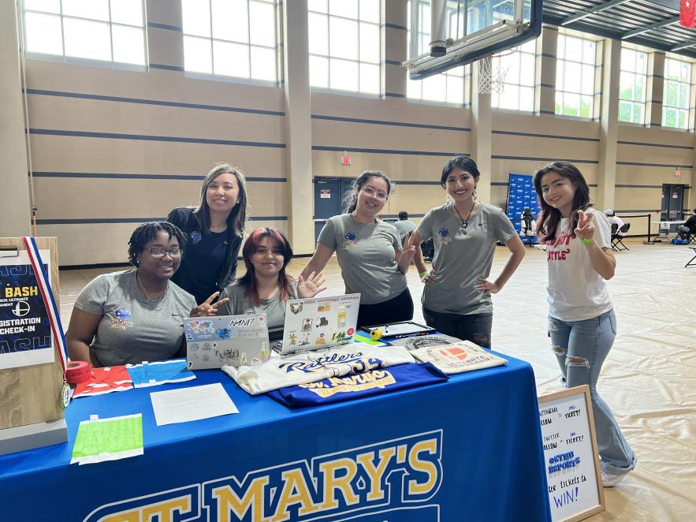
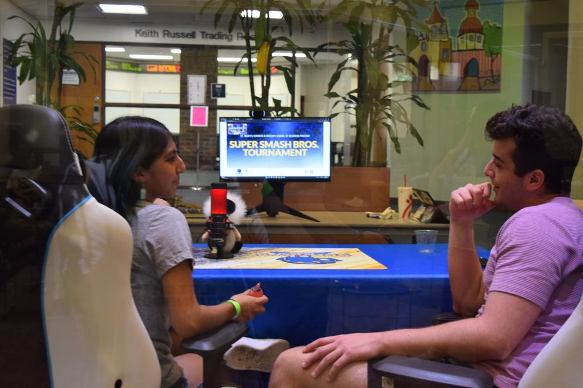
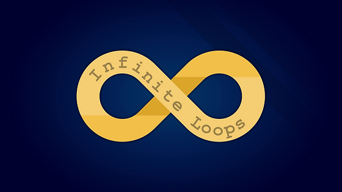

I'm currently a Junior Computer Science major at St. Mary's University.
I am pursuing a minor in Mathematic and have a current focus in game development.
I am curious about many topics and am always welcoming a new challenge or chance to learn something new!
Last updated: May 24, 2023
I have been passionate about programming since I was first introduced to it in middle
school through various robotics camps and my participation in the UTSA Prefreshman Engineering Program program.
Since coming to St. Mary's, I have made sure that I am involved on campus through clubs and organizations.
I am currently the Vice President for the Infinite Loops computer science club, a team manager
for our Esports program, and a member of the Esports broadcast team.
Through these positions I help organize activites for our members and volunteer at various events throughout the year.
With my passion for programming, I worked as a tech assistant for the SET tech Camps St. Mary's holds in the summer
and got to help cultivate an interest in computer science in high school students local to San Antonio.
It is very important to me to give back to my community and I hope to continue helping others in my career.
with a minor in Mathematics and a focus in game development
St. Mary's University, San Antonio, Texas
Expected graduation: May 2025
GPA: 3.66
Relevant coursework: Introduction to C programming, Data Structures,
Algorithms, Object-Oriented Programming I & II, Computer Architecture
Programming languages: proficient in C, proficient in C++,
proficient in Java, basic experience with Python, basic knowledge of html
Other: vMix, time management, colaboration, adaptability, critical thinking
Collaborate with other team members to ensure a smooth run of show for live broadcasts. Assist in various areas of the broadcast operation by assisting with the set up and breakdown of equipment. Learn how to operate various positions of the operation while working in a fast-paced environment.
Produced live-stream broadcast for St. Mary's University Law School commencement to an audience of spectators and remote viewers. Collaborated with technical director and broadcast engineer to execute the live-streamed show according to run of show and university communication department. Utilized vMix to incorporate commencement graphics, overlays, and multiple camera views.
Responsible for basic routine tasks and procedures in providing excellent customers service in taking orders and payments. Responsible for delivering fast, friendly, and quality service while multi-tasking with customers. Assisted in efficiently cleaning and maintaining a cleaning and safe working environment. Aided other areas of the operation as needed.
Assisted university professors with the teaching of foundational technology knowledge, mentored students individually with programming projects using Java, Game Maker, and Python. Led the students on tours of the St. Mary's campus showcasing the programs, buildings, and history as well as providing an insight about student life on campus.
As a manager I network with teams from other schools to schedule scrimmages
and monitor the course of official matches. I collaborate with other managers within
the program to effectively schedule events. And I am responsible for keeping
an organized record of team statistics and schedules.
Esports roster page
Being a part of the broadcast team I get to help organize and run our
weekly twitch streams as well as a few community events. I work with a team
of other students to ensure a smooth run of show for the live broadcasts and learn
how to operate different areas of the operation.
Esports twitch channel


As the Vice President I assist the President of the club in planning and organizing events and activities for the club. I collaborate with other members about ideas and projects. I conduct club and officer meetings when the President is unable to. I also use my knowledge as prior Secretary of the club to assist other officers with their duties as well as assist the President on any extra projects they would like to take on for the year.

A Java program that utilizes a GUI made in SceneBuilder to run a simple painting app
Project GitHub
A program where the user chooses a playable 8 puzzle board for the computer to solve
Project GitHub
Utilizes three header files in order to create a simple banking app that simulates a simple interface
to update the balance of a savings or checking account after depositing and withdrawing within it
Project GitHub